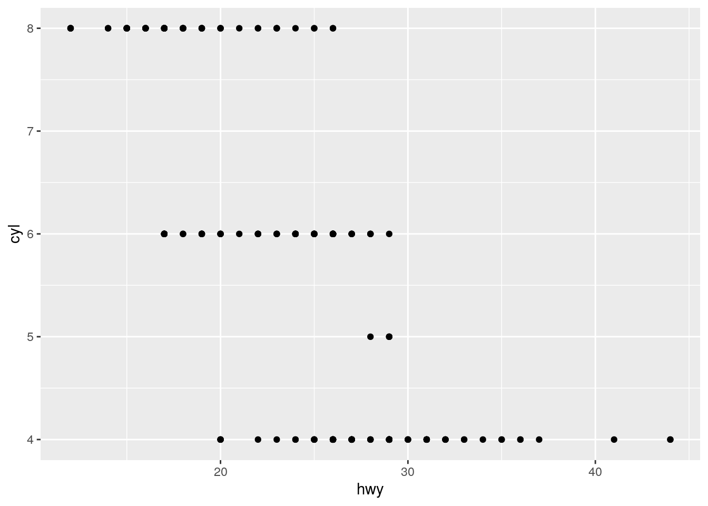

ggplot2_solutions
Aaron Weimann
15/04/2020
ggplot2 solution sheet
Set 1
- Run ggplot(data = mpg). What do you see?
ggplot(data = mpg)
The output is just an empty plot. As long as we don’t provide any aesthetics and don’t provide a geom the output will be empty.
- How many rows are in mpg? How many columns?
We can find out by inspecting the data frame typing mpg into the console or we can use pre-defined functions in R nrow and ncol. There are 234 rows and 11 columns.
mpg## # A tibble: 234 x 11
## manufacturer model displ year cyl trans drv cty hwy fl class
## <chr> <chr> <dbl> <int> <int> <chr> <chr> <int> <int> <chr> <chr>
## 1 audi a4 1.8 1999 4 auto(l5) f 18 29 p compact
## 2 audi a4 1.8 1999 4 manual(m5) f 21 29 p compact
## 3 audi a4 2 2008 4 manual(m6) f 20 31 p compact
## 4 audi a4 2 2008 4 auto(av) f 21 30 p compact
## 5 audi a4 2.8 1999 6 auto(l5) f 16 26 p compact
## 6 audi a4 2.8 1999 6 manual(m5) f 18 26 p compact
## 7 audi a4 3.1 2008 6 auto(av) f 18 27 p compact
## 8 audi a4 quattro 1.8 1999 4 manual(m5) 4 18 26 p compact
## 9 audi a4 quattro 1.8 1999 4 auto(l5) 4 16 25 p compact
## 10 audi a4 quattro 2 2008 4 manual(m6) 4 20 28 p compact
## # … with 224 more rowsnrow(mpg)## [1] 234ncol(mpg)## [1] 11- What does the drv variable describe? Read the help for ?mpg to find out.
We can use the notation ? to look up the help for libaries or functions inside of libraries in the R help. If we type this in the console in Rstudio this will open an additional tab showing the help entry for the mpg data set. It says “the type of drive train, where f = front-wheel drive, r = rear wheel drive, 4 = 4wd”.
?mpg- Make a scatterplot of hwy vs cyl.
ggplot(mpg, aes(hwy, cyl)) +
geom_point() We use ggplot with the mapping hwy and cyl and the geom geom_point to make our scatter plot. From the scatter plot we can see that our cars either have 4, 5, 6 or 8 cyclinders and that cars with less cyclinders tend to last more miles per gallon of fuel.
- What happens if you make a scatterplot of class vs drv? Why is the plot not useful?
ggplot(mpg, aes(class, drv)) +
geom_point()
There are two issues with this scatter plot. First of all using geom_point implies that there can be some in between values e.g. a a car bewteen a minivan and a pickup with something between an front-wheel drive and a four wheel drive. Secondly, there might be many cars with the same combination of drive and car, which this sort of plot doesn’t show us. In summary, a scatter plot is not the right sort of plot for categorical variables.
Set 2
- What’s gone wrong with this code? Why are the points not blue?
ggplot(data = mpg) +
geom_point(mapping = aes(x = displ, y = hwy, color = "blue"))We have used the color argument as part of the mapping aes rather than as argument to the geom_point function. ggplot2 will interpret color = “blue” as an additional column of the mpg data frame with the constant value “blue” rather than as a color.
- Which variables in mpg are categorical? Which variables are continuous? (Hint: type ?mpg to read the documentation for the dataset). How can you see this information when you run mpg?
We can use the notation ? to look up the help for libaries or functions inside of libraries in the R help. If we type this in the console in Rstudio this will open an additional tab showing the help entry for the mpg data set.
?mpgThe description of the mpg data frame suggests that manufacturer name, model name, type of transmission, the type of drive train, the fuel type and the class are categorical variables. Engine displacement, year of manufacture, cty and highway miles per gallon are continuous. We can also type mpg into the console, which will display a preview of the data frame with column types for each column. Categorical variables are
mpg## # A tibble: 234 x 11
## manufacturer model displ year cyl trans drv cty hwy fl class
## <chr> <chr> <dbl> <int> <int> <chr> <chr> <int> <int> <chr> <chr>
## 1 audi a4 1.8 1999 4 auto(l5) f 18 29 p compact
## 2 audi a4 1.8 1999 4 manual(m5) f 21 29 p compact
## 3 audi a4 2 2008 4 manual(m6) f 20 31 p compact
## 4 audi a4 2 2008 4 auto(av) f 21 30 p compact
## 5 audi a4 2.8 1999 6 auto(l5) f 16 26 p compact
## 6 audi a4 2.8 1999 6 manual(m5) f 18 26 p compact
## 7 audi a4 3.1 2008 6 auto(av) f 18 27 p compact
## 8 audi a4 quattro 1.8 1999 4 manual(m5) 4 18 26 p compact
## 9 audi a4 quattro 1.8 1999 4 auto(l5) 4 16 25 p compact
## 10 audi a4 quattro 2 2008 4 manual(m6) 4 20 28 p compact
## # … with 224 more rows- Map a continuous variable to color, size, and shape. How do these aesthetics behave differently for categorical vs. continuous variables?
ggplot(mpg, aes(x = displ, y = hwy, color = cyl)) +
geom_point()ggplot(mpg, aes(x = displ, y = hwy, color = drv)) +
geom_point()ggplot(mpg, aes(x = displ, y = hwy, size = cyl)) +
geom_point()
ggplot(mpg, aes(x = displ, y = hwy, size = drv)) +
geom_point()ggplot(mpg, aes(x = displ, y = hwy, shape = drv)) +
geom_point()#this will produce an error
#ggplot(mpg, aes(x = displ, y = hwy, shape = cyl)) +
# geom_point()For color we find that R uses a color gradient when using continuous variables, whereas it uses distinct colors for categorical variables automatically. For size we see that for the categorical case the data points are hard to distinguish from one another. R even issues a warning. Finally for the shape aesthetic, we find that only categorical variables are supported. The last two lines of code provoke an error message. This is because there is no straight forward way of mapping a continuous variables to the shape of a data point.
- What happens if you map the same variable to multiple aesthetics?
Let’s try it out with cyl and drv:
ggplot(mpg, aes(x = displ, y = hwy, color = cyl, color = drv)) +
geom_point()
We find that R ignores the second assignment of the color aesthetic and only shows the cyl colour gradient.
- What does the stroke aesthetic do? What shapes does it work with? (Hint: use ?geom_point)
ggplot(mpg, aes(x = displ, y = hwy, size = cty, stroke = cyl)) +
geom_point(colour = "black", fill = "white", shape = 21)From the help function: For shapes that have a border (like shape 21), you can colour the inside and outside separately. Use the stroke aesthetic to modify the width of the border. In our example we use a black border and a white filling and then map the width of the border (the stroke) to the cyl variable and the size of the inner dot to cty.
- What happens if you map an aesthetic to something other than a variable name, like aes(colour = displ < 5)? Note, you’ll also need to specify x and y.
ggplot(mpg, aes(x = displ, y = hwy, colour = displ < 5)) +
geom_point()We find that R evaluates the condition i.e. for each data point it will check whether displ is smaller than five. The results, a vector of FALSE and TRUE a categorical variable is then mapped to the colour aesthethic.
Set 3
- What happens if you facet on a continuous variable?
When we use the example from the ggplot2 tutorial but replace cyl with cty the number of highway miles per gallon which is a continuous number we get the following plot:
ggplot(data = mpg) +
geom_point(mapping = aes(x = displ, y = hwy)) +
facet_grid(drv ~ cty)
R will interpret cty as a discrete rather than a continuous variable. In R that’s called a factor. What happens is that for any unique number of city miles per gallon that is in the data set we will get a separate facet. This is not a very useful visualization of the data because in reality very few cars have the same number of gallons and the number of facets soars.
- What do the empty cells in plot with facet_grid(drv ~ cyl) mean? How do they relate to this plot?
ggplot(data = mpg) +
geom_point(mapping = aes(x = drv, y = cyl))
In this plot we explore the relationship between the number of cylinders and the type of drive train both are factors. We see that there are some combinations of cyl and drv that are absent in this data set e.g. there is no car that has got five cylinders and a rear wheel drive (r). Looking back at the original plot in the tutorial:
ggplot(data = mpg) +
geom_point(mapping = aes(x = displ, y = hwy)) +
facet_grid(drv ~ cty)We see that the facets that are empty correspond to exactly those combinations of cyl and drv that were absent from the data set as we saw in the previous plot.
- What plots does the following code make? What does . do?
ggplot(data = mpg) +
geom_point(mapping = aes(x = displ, y = hwy)) +
facet_grid(drv ~ .)ggplot(data = mpg) +
geom_point(mapping = aes(x = displ, y = hwy)) +
facet_grid(. ~ cyl)Using the drv ~ . for the facet grid will give us a grid of only rows corresponding to the invidiual values of drv, . ~ cyl will give us a grid of only columns corresponding to the individual values of cyl. The “.” is a placeholder if you don’t want row/columns facets.
- Take the first faceted plot in this section:
ggplot(data = mpg) +
geom_point(mapping = aes(x = displ, y = hwy)) +
facet_wrap(~ class, nrow = 2)
ggplot(data = mpg) +
geom_point(mapping = aes(x = displ, y = hwy, color = class)) What are the advantages to using faceting instead of the colour aesthetic? What are the disadvantages? How might the balance change if you had a larger dataset?
Looking at a version of the plot that uses the color aesthetic to represent class, we see that there is quite a bit of overlap of cars but on the plus we see a points in one plot and can compare the different classes to each other more readily. If the data sets grows even bigger the issue of cars with the same hwy and displ will become better.
- Read ?facet_wrap. What does nrow do? What does ncol do? What other options control the layout of the individual panels? Why doesn’t facet_grid() have nrow and ncol arguments?
The nrow and ncol parameters control the number of rows and number of columns in the facet arragangement that is being created based on just one facet variable. facet_grid() doesn’t have a nrow or ncol parameter because the number of rows and columns are determined by the number of unique values in the formula used.
- When using facet_grid() you should usually put the variable with more unique levels in the columns. Why?
We usually want to produce plots that are wider than long. Using the variable with more unique levels in the columns will make sure the plots stretch out in the horizontal direction rather than the vertical direction.